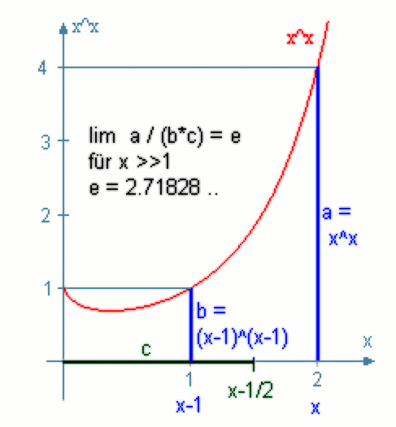
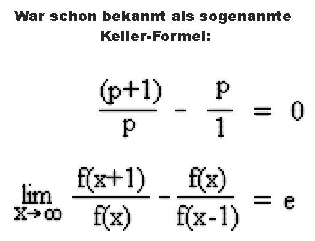
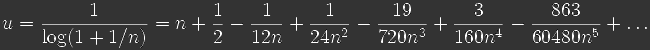

Hinweis:
Die Funktionen x^(1/x) und x^x haben bei der Eulerschen Zahl x=e bzw. x=1/e Extremwerte:


| Fr x gegen Unendlich gilt: (x^x) / ((x-1)^(x-1)) / (x-0.5) = e e = 2.718281828.. Eulersche Zahl x kann beliebig gebrochen sein, aber die Schrittweite 1 muss beibehalten werden. gefunden von Frithjof Mller |
  |
Hinweis:
Die Funktionen x^(1/x) und x^x haben bei der Eulerschen Zahl x=e bzw. x=1/e
Extremwerte:
Weiteres zu x^x und seiner
Umkehrfunktion:
LogamentusNewton.htm
Ergnzung: Es ist analytisch
ableitbar, dass die Potenz mit der besten Konvergenz weitere Summanden hat,
und zwar 
Kontakt (2022)
Gabi und Frithjof Müller
Danziger Str. 9
35415 Pohlheim
Germany
Email: info@viva-vortex.de